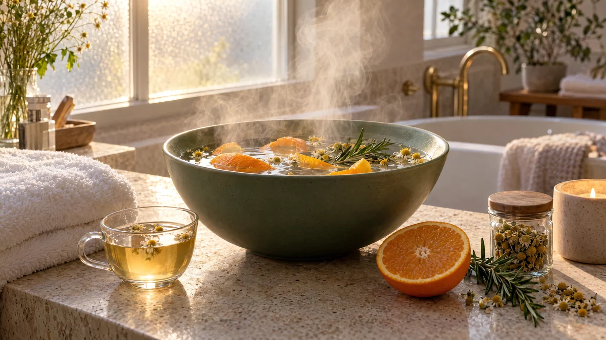

RESTFEST · HEMMASPA
Ångbad för ansiktet med kamomill, citrusskal och rosmarin
En påse kamomillte, skalet från en apelsin och en kvist rosmarin. Örterna dras i hett vatten i en stor skål, och du lutar dig över den under en handduk medan den doftande ångan värmer och mjukar upp huden. Fem minuter som känns som ångrummet på ett spa, och ett perfekt första steg före en ansiktsmask.
- Förberedelse
- 5 min
- Verkningstid
- 5–8 min
- Räcker till
- 1 behandling
- Nivå
- Nybörjare
Bra att veta. Gör ett lapptest innan du provar något nytt: stryk lite på insidan av underarmen och vänta ett dygn.
 Det här behöver du
Det här behöver du
Tryck på + vid det du behöver köpa.
Gör så här
- Koka upp vattnet.
- Lägg tepåsar, citrusskal och rosmarin i en stor, värmetålig skål. Häll över det kokande vattnet och låt dra i 3–5 minuter, tills ångan inte längre är skållhet. Känn med handflatan en bit ovanför ytan.
- Tvätta ansiktet och sätt upp håret.
- Ställ skålen på ett stadigt bord. Sätt dig ner, luta dig över skålen på minst 30 centimeters avstånd och lägg handduken över huvudet och skålen som ett tält.
- Andas lugnt och låt ångan värma ansiktet i 5–8 minuter. Blir det för varmt, lyft på handduken eller luta dig längre bort.
- Badda ansiktet med en sval, fuktig tvättlapp och klappa torrt. Avsluta med ansiktskräm, eller fortsätt direkt med havremasken i behandling 33.
Presentation och användning
- Använd en vacker skål i keramik eller emalj, och låt citrusskalen och örtkvisten flyta på ytan.
- Ställ skålen på en bricka med en vikt handduk, en tvättlapp och en kopp av samma kamomillte.
- Spara skal från fruktskålens apelsiner och citroner i frysen, så har du alltid något doftande till hands.
- Ångan gör huden mjuk och mottaglig, så ångbadet passar som första steg i en hel spakväll.
Bra att veta
- Ånga ger lätt brännskador. Låt vattnet svalna några minuter, håll avståndet och låt barn bara göra det med en vuxen bredvid.
- Hoppa över ångbadet om du har rosacea, eksem eller känslig, irriterad hud, eftersom värmen kan förvärra rodnaden.
- Är du allergisk mot korgblommiga växter, som gråbo, kan kamomill ge en reaktion. Använd då bara citrusskal och rosmarin.